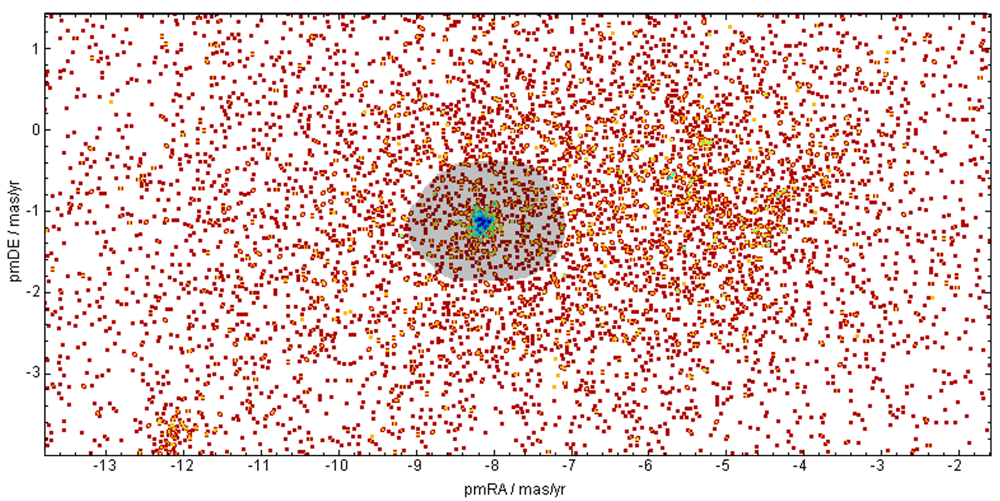
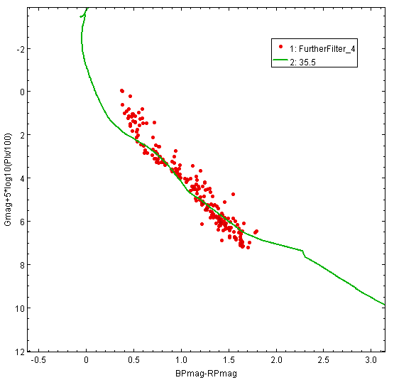
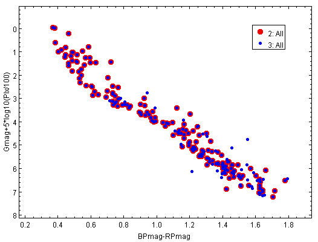

01Why open clusters
Open clusters are calibration laboratories for stellar evolution. Their members share an age, a metallicity, and a distance to within tight tolerances — which means that whatever spread you see on the colour-magnitude diagram is telling you about evolution, not about contaminating heterogeneity. Gaia DR3, with its precision astrometry and homogeneous photometry, has transformed this kind of work: the membership selection that used to be the hardest part is now tractable from the catalogue alone.
The workshop selected NGC 4852 from a starting list of 269 known clusters, narrowed by a log(age) < 7.7 cut to 54 candidates, and finally chosen for the combination of detectable turn-off, manageable member count, and a Simbad reference set with >90% probability membership against which the curated result could be validated.
02The filtering chain
Cone search and pre-selection
A VizieR query on Gaia DR3 around the cluster centre returned 10,989 candidate sources (cluster members plus background sky). That was the starting catalogue from which the analysis had to recover the genuine cluster.
Proper motion (Task 3)
Cluster members move together. On the proper-motion scatter (μα* vs μδ), the cluster appears as a tight overdensity against a dispersed field. A polygon selection around that overdensity left 866 candidates — about 8% of the cone-search starting set.

Parallax (Task 4)
Sorting the proper-motion subset by parallax revealed a consistent range — the cluster is at one distance, field interlopers cover a much wider parallax distribution. A parallax filter on the surviving sources left 251 members.
Astrometric quality — RUWE (Task 5)
The Renormalised Unit Weight Error is Gaia's headline astrometric-quality metric: values above ~1.4 indicate the single-star astrometric solution is a poor fit, often because the source is unresolved binary. Applying RUWE < 1.3 removed an additional set of suspicious sources, leaving 233 members. The discarded RUWE-fail sources are recorded as a check rather than thrown away — they could be genuine binary cluster members and are flagged for follow-up.
Further refinement (Task 6)
A four-pass refinement on additional astrometric and photometric quality parameters (proper-motion uncertainties, photometric error, BP/RP excess factor) converged on 212 final cluster members.
03Colour-magnitude diagram and isochrone fitting
With clean members in hand, the Gaia G versus (BP − RP) colour-magnitude diagram shows the cluster's main sequence and turn-off. Overlaying PARSEC / CMD-3.x isochrones constrains age, distance modulus, and extinction simultaneously. The best-fit isochrone (around log(age) = 35.5 in the workshop's parameterisation, with appropriate distance and reddening adjustments) reproduces the observed main sequence cleanly.

04Validation against the literature
The final check: cross-match the curated 212-member sample against an existing literature reference set of 1,352 candidate sources for NGC 4852 (TOPCAT crossmatch). The overlap is 167 members in common — a clean, internally consistent reproduction of the established cluster footprint, with the curated sample being more conservative on the boundary than the literature set.

05Why this is on a space-engineering portfolio
Mission analysis is full of derived parameters from noisy observations: parallax, proper motion, photometric magnitudes, the cluster age inferred from a turn-off — they are the same kind of object as a seismic inversion result, an EO classifier confidence, or an orbit-determination residual. The technique is transferable; the discipline of treating uncertainty honestly is the same. This project is a small but explicit demonstration of that habit applied to astronomical data, with the audit trail (10,989 → 866 → 251 → 233 → 212) documented end-to-end.